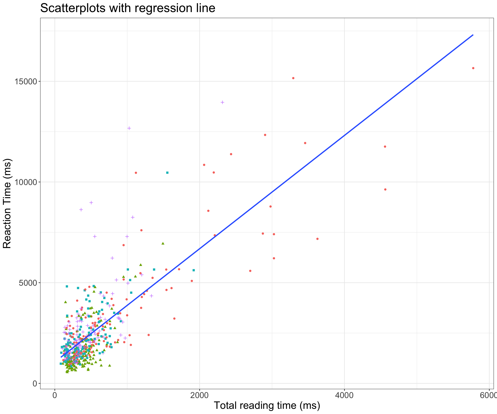
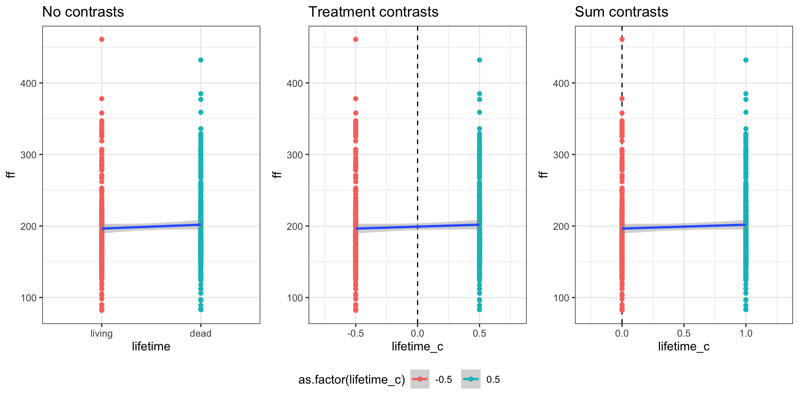
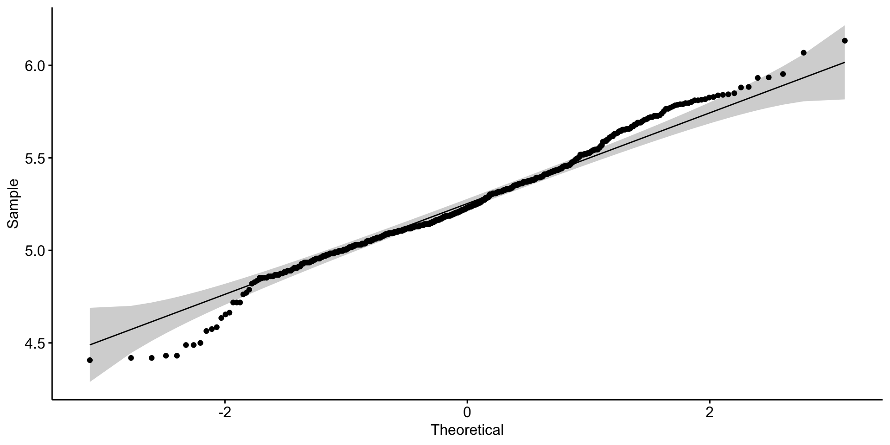
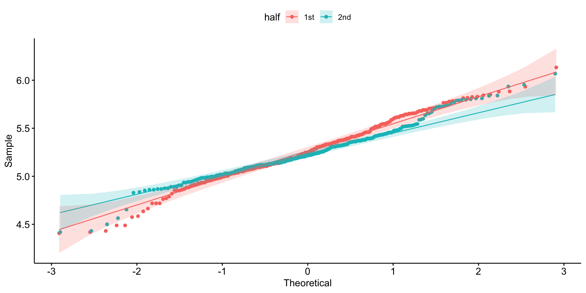

Linear Regression 1
Simple Linear Regression
Humboldt-Universität zu Berlin
2023-04-13
Set-up environment
Load packages
Load in data
- force character variables to factors
- filter for the verb region from critical items only, remove participant 3, and remove values of first-fixtation that are 0
# load in dataset
df_crit_verb <- readr::read_csv(here::here("data/tidy_data_lifetime_pilot.csv"),
# for special characters
locale = readr::locale(encoding = "latin1")
) |>
mutate_if(is.character,as.factor) |> # all character variables as factor
filter(type == "critical", # only critical trials
px != "px3", # px3 had a lot of missing values
ff > 0, # only values of ff above 0
region == "verb") %>% # critical region only
droplevels() # remove any factor levels with no observationsResources
- these slides are based on a mix of the following resources
DeBruine & Barr (2021); Winter (2013); Winter (2014); Winter (2019)
(Linear) Regression
- our data exploration has given us an idea about what our data look like
- but now we want to be able to make predictions about hypothetical observations, i.e., to predict values of our DV based on one (or more) IV(s)
- so we fit a model to our data, and use it to predict values of our DV based on one (or more) IV(s)
- i.e., predicting an outcome variable (DIV) from one or more predictors (IVs)
- because we’re making predictions, we need to take into account the variability (i.e., error) in our data
Types of regression
- Simple regression
- single predictor
- Multiple regression
- multiple predictors
- Hierarchical/mixed models
- include random effects
- Logistic (mixed) regression
- binary predictor
Straight lines
- regression summarises the data with a straight line
- straight lines can be defined by
- Slope (\(b_1\))
- regression coefficient for the predictor
- gradient (slope) f the regression line
- direction/strenth of relationship
- Intercept (\(b_0\))
- value of \(Y\) when \(X = 0\)
- Slope (\(b_1\))
- so we need to define an intercept and a slope
Code
df_crit_verb |>
ggplot(aes(x = tt, y = rt)) +
# facet_wrap(.~condition) +
labs(title = "Scatterplots with regression line",
x = "Total reading time (ms)",
y = "Reaction Time (ms)") +
geom_point(aes(colour = condition, shape = condition)) +
geom_smooth(method="lm", se=F, fullrange=FALSE, level=0.95) +
theme_bw() +
theme(legend.position = "none",
text = element_text(size=18))
Slopes (\(b_1\))
- slopes describe a change in \(x\) (\(\Delta x\)) over a change in \(y\) (\(\Delta y\))
- positive slope: as \(x\) increases, \(y\) increases
- negative slope: as \(x\) increases, \(y\) decreases
- if the slope is 0, there is no change in \(y\) as a function of \(x\)
- or: the change in \(y\) when \(x\) increase by 1 unit
- sometimes referred to as “rise over run”: how do you ‘rise’ in \(y\) for a given ‘run’ in \(x\)?
\[ slope = \frac{\Delta x}{\Delta y} \]
Intercepts (\(b_0\))
- the value of \(y\) when \(x = 0\)
A line = intercept and slope
- a line is defined by its intercept and slope
- in a regression model, these two are called
coefficients
- in a regression model, these two are called
Image source: Winter (2019) (all rights reserved)
Error and residuals
- fixed effects (IV/predictors): things we can understand/measure
- error (random effects): things we cannot understand/measure
- in biology, social sciences (and linguistic research), there will always sources of random error that we cannot account for
- random error is less an issue in e.g., physics (e.g., measuring gravitational pull)
- residuals: the difference (vertical difference) between observed data and the fitted values (predicted values)
Equation of a line
\[ \begin{align} y & = mx + c\\ Y_i &= (b_0 + b_1X_i) + \epsilon_i\\ outcome_i & = (model) + error_i\\ y_i & = (intercept + slope*x_i) + error_i \end{align} \]
Linear regression: first fixation duration
Fit model (intercept only)
lm()function formula syntax can be read as: ff predicted by the intercept (1is a placeholder for the intercept)- the intercept is included by default
- if you omit the
1, the intercept is still included in the formula - if you wanted to remove the intercept (which you often don’t), you could replace
1with0
Summary
Call:
1lm(formula = ff ~ 1, data = .)
Residuals:
Min 1Q Median 3Q Max
2-117.09 -37.09 -12.09 26.41 261.91
Coefficients:
3 Estimate Std. Error t value Pr(>|t|)
4(Intercept) 199.094 2.466 80.73 <0.0000000000000002 ***
---
5Signif. codes: 0 ‘***’ 0.001 ‘**’ 0.01 ‘*’ 0.05 ‘.’ 0.1 ‘ ’ 1
6Residual standard error: 57.47 on 542 degrees of freedom- 1
- formula repetition
- 2
- residuals: differences between observed values and those predicted by the model
- 3
-
names for columns Estimates, standard error, t-value, p-value (
Pr(>|t|)) - 4
- Intercept (\(b_0\)), i.e., value of \(y\) (first fix.) with a move of one unit of \(x\) (lifetime)
- 5
- Significance codes
- 6
- R\(^2\), a measure of model fit (squared residuals); percentage of variance in the data shared with the predictor (higher numbers are better…this is pretty low)
Intercept
- the intercept is essentially the mean
Adding a fixed effect (slope)
- now let’s include a slope
- the slope represents the change in \(y\) (DV:
ff) when we move 1-unit along \(y\) (IV:lifetime) - in other words, it tells us the effect our IV has on the DV
- what is the change in first-fixation times when we move from dead to living referents?
lifetimeis categorical, how can we move 1 unit?- a linear model requires \(x\) and \(y\) to be numerical, so it simply codes factor levels as
0and1by default (in alphabetical order) - so the slope represents the difference between categorical conditions
- a linear model requires \(x\) and \(y\) to be numerical, so it simply codes factor levels as
Factors as numbers
- when we code categorical data as numerical values, this is called
contrast coding
Fit model (treatment contrasts)
Model summary
Call:
lm(formula = ff ~ lifetime, data = df_crit_verb, subset = ff >
0)
Residuals:
Min 1Q Median 3Q Max
-118.78 -37.78 -11.39 25.22 264.61
Coefficients:
Estimate Std. Error t value Pr(>|t|)
(Intercept) 201.783 3.484 57.920 <0.0000000000000002 ***
lifetimeliving -5.388 4.931 -1.093 0.275
---
Signif. codes: 0 '***' 0.001 '**' 0.01 '*' 0.05 '.' 0.1 ' ' 1
Residual standard error: 57.46 on 541 degrees of freedom
Multiple R-squared: 0.002202, Adjusted R-squared: 0.0003575
F-statistic: 1.194 on 1 and 541 DF, p-value: 0.275Intercept
- our intercept is no longer the grand mean of first-fixation times…what is it?
Intercept for treatment contrasts
- what are the means of our two factor levels?
(Intercept)
201.7831 Code
# compute summary
summary_ff_life <- df_crit_verb |>
filter(region=="verb",
ff > 0) |>
group_by(lifetime) %>%
summarise(N = n(),
mean = mean(ff, na.rm = T),
sd = sd(ff, na.rm = T))
knitr::kable(summary_ff_life, digits=3,
caption = "Summmary statistics for first-fixation duration at the verb region") %>%
kableExtra::kable_styling(font_size = 30,
position = "left")| lifetime | N | mean | sd |
|---|---|---|---|
| dead | 272 | 201.783 | 55.197 |
| living | 271 | 196.395 | 59.639 |
Slope
- what was our slope?
- what does this correspond to?
lifetimeliving
-5.388254 Code
# compute summary
summary_ff_life <- df_crit_verb |>
filter(region=="verb",
ff > 0) |>
group_by(lifetime) %>%
summarise(N = n(),
mean = mean(ff, na.rm = T),
sd = sd(ff, na.rm = T))
knitr::kable(summary_ff_life, digits=3,
caption = "Summmary statistics for first-fixation duration at the verb region") %>%
kableExtra::kable_styling(font_size = 30,
position = "left")| lifetime | N | mean | sd |
|---|---|---|---|
| dead | 272 | 201.783 | 55.197 |
| living | 271 | 196.395 | 59.639 |
Slope
- what was our slope?
- what does this correspond to?
[1] 5.388Code
# compute summary
summary_ff_life <- df_crit_verb |>
filter(region=="verb",
ff > 0) |>
group_by(lifetime) %>%
summarise(N = n(),
mean = mean(ff, na.rm = T),
sd = sd(ff, na.rm = T))
knitr::kable(summary_ff_life, digits=3,
caption = "Summmary statistics for first-fixation duration at the verb region") %>%
kableExtra::kable_styling(font_size = 30,
position = "left")| lifetime | N | mean | sd |
|---|---|---|---|
| dead | 272 | 201.783 | 55.197 |
| living | 271 | 196.395 | 59.639 |
intercept: value of \(y\) when \(x\) = 0
slope: difference in \(y\) with a 1-unit change of \(x\)
treatment contrasts: factor levels are coded as
0and1(alphabetically)- so when our predictor (\(x\)) = 0, this is the first alphabetical level of our factor (in our case,
dead) - so our intercept will be the mean
fffor the lifetime leveldead
- so when our predictor (\(x\)) = 0, this is the first alphabetical level of our factor (in our case,
Method of least squares
- how did
lmerchoose this particular line (namely, the slope)?- intercept = grand mean of observed data (with sum contrasts)
- slope = predicted change in \(y\) over \(x\)
- the procedure that finds the line that best fits the data is called the method of least squares
- minimises the sum of squares (residuals are squared and summed)
- method of least squares
- find the line that has the lowest sum of squares
Changing our contrasts
it sometimes makes more sense for the intercept to represent the grand mean
- to do this, we want 0 to be between our two factor levels
- e.g., change the contrasts to
-0.5and+0.5
this is called sum coding
first, order our predictor
- we predict longer reading times for dead versus living, so order living dead
- this could also have been done with treatment contrasts (0,1)
Changing our contrasts
[,1]
living -0.5
dead 0.5Fit model (sum contrasts)
Coefficients table with summary()
> summary(fit_ff)
Call:
1lm(formula = ff ~ lifetime, data = df_crit_verb, subset = ff > 0)
2Residuals:
Min 1Q Median 3Q Max
-118.78 -37.78 -11.39 25.22 264.61
Coefficients:
3 Estimate Std. Error t value Pr(>|t|)
4(Intercept) 199.089 2.466 80.743 <2e-16 ***
5lifetimedead 5.388 4.931 1.093 0.275
---
Signif. codes: 0 ‘***’ 0.001 ‘**’ 0.01 ‘*’ 0.05 ‘.’ 0.1 ‘ ’ 1
Residual standard error: 57.46 on 541 degrees of freedom
6Multiple R-squared: 0.002202, Adjusted R-squared: 0.0003575
F-statistic: 1.194 on 1 and 541 DF, p-value: 0.275- 1
- formula
- 2
- Residuals: differences between observed values and those predicted by the model
- 3
- Names for columns Estimates, SE, t-value, p-value
- 4
- Intercept (\(b_0\)), i.e., value of \(y\) (first fix.) with a move of one unit of \(x\) (lifetime)
- 5
-
Slope (\(b_1\)), i.e., change in first fixation going from
deadtoliving - 6
- Output from an ANOVA
- what is the intercept?
- is the slope positive or negative?
- what is it’s value?
- this is what the slope would look like:
Understanding the summary
- let’s compute summary statistics based on lifetime
- then compare this to the model output
Exercises
- Subtract the mean first-fixation reading time of
deadfrom that ofliving- what does this correspond to in the model summary?
- Compute the mean of
dead+living- what does this correspond to in the model summary?
- Divide the slope in 2. Subtract this from the mean of
dead.- what does this correspond to?
Summary statistics
Code
# compute summary
summary_ff_life <- df_crit_verb |>
filter(region=="verb",
ff > 0) |>
group_by(lifetime) %>%
summarise(N = n(),
mean = mean(ff, na.rm = T),
sd = sd(ff, na.rm = T)) %>%
# compute standard error, confidence intervals, and lower/upper ci bounds
mutate(se = sd / sqrt(N),
ci = qt(1 - (0.05 / 2), N - 1) * se,
lower.ci = mean - qt(1 - (0.05 / 2), N - 1) * se,
upper.ci = mean + qt(1 - (0.05 / 2), N - 1) * se)
knitr::kable(summary_ff_life, digits=3,
caption = "Summmary statistics for first-fixation duration at the verb region") %>%
kableExtra::kable_styling(font_size = 24,
position = "left")| lifetime | N | mean | sd | se | ci | lower.ci | upper.ci |
|---|---|---|---|---|---|---|---|
| living | 271 | 196.395 | 59.639 | 3.623 | 7.133 | 189.262 | 203.527 |
| dead | 272 | 201.783 | 55.197 | 3.347 | 6.589 | 195.194 | 208.372 |
Model summary
Call:
lm(formula = ff ~ lifetime, data = .)
Residuals:
Min 1Q Median 3Q Max
-118.78 -37.78 -11.39 25.22 264.61
Coefficients:
Estimate Std. Error t value Pr(>|t|)
(Intercept) 199.089 2.466 80.743 <0.0000000000000002 ***
lifetime1 5.388 4.931 1.093 0.275
---
Signif. codes: 0 '***' 0.001 '**' 0.01 '*' 0.05 '.' 0.1 ' ' 1
Residual standard error: 57.46 on 541 degrees of freedom
Multiple R-squared: 0.002202, Adjusted R-squared: 0.0003575
F-statistic: 1.194 on 1 and 541 DF, p-value: 0.275Slope
intercept = value of \(y\) when \(x = 0\)
treatment contrasts: factor levels are coded as
0and1- intercept is mean of level that is coded as
0
- intercept is mean of level that is coded as
sum contrast coding: factor levels are coded as
+/-0.5(or1)- when \(x = 0\), this is the mid-way point between our two predictor levels
- so the intercept will be the grand mean of our two levels
our slope is unchanged, however (unless we set our sum contrasts to +/- 1, which some people do)
Contrast coding
Comparing models
Exploring our model
- the linear model contains fitted values corresponding to our observed values
- these fitted values are fit to a straight line
- our observed values are not fit to a straight line
- the residuals are the differences along the \(y\) axis from the fitted to the observed values
Exploring the model
[1] 543Exploring the model: residuals
1 2 3 4 5 6
196.3948 196.3948 201.7831 196.3948 201.7831 196.3948 [1] 175 207 228 231 212 168 1 2 3 4 5 6
-21.39483 10.60517 26.21691 34.60517 10.21691 -28.39483 1 2 3 4 5 6
-21.39483 10.60517 26.21691 34.60517 10.21691 -28.39483 Exploring the model
- what were our coefficients?
(Intercept) lifetime1
199.088961 5.388254 - what is the mean of our predictor coded as
-0.5?
(Intercept)
196.3948 ignore the
(Intercept)label here,Rjust takes the first label when performing an operation on 2 vectorswhat is the mean of our predictor coded as
+0.5?
(Intercept)
201.7831 Assumptions
- refer to residuals
- i.e., the difference between the observed and the fitted (predicted) values
- normality assumption
- residuals of the model are (approximately) normally distributed
- constant variance assumption (homoscedasticity)
- spread of residuals should be (approximately) equal along the regression line
- absence of collinearity
- independence
Normality assumption
- can be inspected e.g., with a histogram or Q-Q plot
Normality assumption
- how about by participant and experimental half?
Normality assumption
- density plot (of residuatls)
Normality assumption
- residual plot: not very helpful for binomial data!
Normality assumption
- reading time data tends to be positively skewed
- so the residuals also tend to be positively skewed
- data with a skewed distribution is does not meet the normality assumption
- a fix: nonlinear transformations
- the most common: the log transformation
- log-transforming your data makes larger numbers smaller (and small numbers smaller too)
- the difference between smaller numbers and larger numbers shrinks
- can make skewed data normally distributed
Log transformation
for more see Section 5.4 in Winter (2019)
the R funtion
log()computes the ‘natural logarithm’ (and is the inverse of the exponentialexp())log()makes large numbers smallerexp()makes small numbers larger
[1] 0.0000000 0.6931472 1.0986123 1.3862944 1.6094379 1.7917595 1.9459101
[8] 2.0794415 2.1972246 2.3025851 [1] 2.718282 7.389056 20.085537 54.598150 148.413159
[6] 403.428793 1096.633158 2980.957987 8103.083928 22026.465795Fit model (log-transformed)
- continuous variables truncated at 0 typically have a positive skew
- a lot of small values (e.g.,
tt< 500ms), with some larger values (>tt1000) - this usually means our residuals are also positively skewed, i.e., not normally distributed
- a lot of small values (e.g.,
- so we typically log-transform raw reading/reaction times for our linear models
Call:
lm(formula = log(ff) ~ lifetime, data = .)
Residuals:
Min 1Q Median 3Q Max
-0.85242 -0.17140 -0.01899 0.15691 0.89550
Coefficients:
Estimate Std. Error t value Pr(>|t|)
(Intercept) 5.25458 0.01197 439.064 <0.0000000000000002 ***
lifetime1 0.03336 0.02394 1.394 0.164
---
Signif. codes: 0 '***' 0.001 '**' 0.01 '*' 0.05 '.' 0.1 ' ' 1
Residual standard error: 0.2789 on 541 degrees of freedom
Multiple R-squared: 0.003579, Adjusted R-squared: 0.001737
F-statistic: 1.943 on 1 and 541 DF, p-value: 0.1639Check assumptions

Check assumptions
Communicating your results
- model summaries can be provided via tables and/or figures
- you should always report the t-values and p-values of an effect
df_crit_verb |>
filter(ff > 0) |>
mutate(log_ff = log(ff)) |>
mutate(half = if_else(trial >= 104, "1st","2nd")) |>
ggpubr::ggqqplot(x = "log_ff")
df_crit_verb |>
filter(ff > 0) |>
mutate(log_ff = log(ff)) |>
mutate(half = if_else(trial >= 104, "1st","2nd")) |>
ggpubr::ggqqplot( x = "log_ff",
color = "half")
Summary
we saw that the equation for a straight line boils down to its intercept and slope
we fit our first linear model with a categorical predictor
we looked at some assumptions of linear models and how to check them
next, we’ll look at a case with more than one predictor: multiple regression
Important terms
| dependent variable (DV) | outcome, measure, \(x\) |
| independent variable (IV) | predictor, fixed effect, \(y\) |
| equation for a straight line | |
| Simple regression | predicting outcome of a DV from an IV |
| Slope | change in $y$ (DV) associated with a unit change in $x$ (IV) = 0 |
| Intercept | value of $y$ (DV) when $x$ (IV) = 0 |
| Normality assumption | |
| Residuals | |
| Coefficients | |
| Log-transformation |
Important functions
lm(dv ~ 1 + iv, data = df_name) |
simple linear model |
summary(model) |
print model summary |
coef(model) |
print coefficients (intercept, slope) |
log() |
log-transform a continuous variable |
Session Info
R version 4.2.3 (2023-03-15)
Platform: aarch64-apple-darwin20 (64-bit)
Running under: macOS Ventura 13.2.1
Matrix products: default
BLAS: /Library/Frameworks/R.framework/Versions/4.2-arm64/Resources/lib/libRblas.0.dylib
LAPACK: /Library/Frameworks/R.framework/Versions/4.2-arm64/Resources/lib/libRlapack.dylib
locale:
[1] en_US.UTF-8/en_US.UTF-8/en_US.UTF-8/C/en_US.UTF-8/en_US.UTF-8
attached base packages:
[1] stats graphics grDevices utils datasets methods base
other attached packages:
[1] magick_2.7.4 broom_1.0.4 lubridate_1.9.2 forcats_1.0.0
[5] stringr_1.5.0 dplyr_1.1.1 purrr_1.0.1 readr_2.1.4
[9] tidyr_1.3.0 tibble_3.2.1 ggplot2_3.4.2 tidyverse_2.0.0
loaded via a namespace (and not attached):
[1] httr_1.4.5 bit64_4.0.5 vroom_1.6.1 jsonlite_1.8.4
[5] viridisLite_0.4.1 splines_4.2.3 carData_3.0-5 here_1.0.1
[9] highr_0.10 yaml_2.3.7 pillar_1.9.0 backports_1.4.1
[13] lattice_0.20-45 glue_1.6.2 digest_0.6.31 ggsignif_0.6.4
[17] rvest_1.0.3 colorspace_2.1-0 cowplot_1.1.1 htmltools_0.5.5
[21] Matrix_1.5-3 rbbt_0.0.0.9000 pkgconfig_2.0.3 scales_1.2.1
[25] webshot_0.5.4 svglite_2.1.1 tzdb_0.3.0 timechange_0.2.0
[29] mgcv_1.8-42 car_3.1-2 generics_0.1.3 farver_2.1.1
[33] ggpubr_0.6.0 withr_2.5.0 cli_3.6.1 magrittr_2.0.3
[37] crayon_1.5.2 evaluate_0.20 fs_1.6.1 fansi_1.0.4
[41] nlme_3.1-162 rstatix_0.7.2 xml2_1.3.3 tools_4.2.3
[45] hms_1.1.3 lifecycle_1.0.3 munsell_0.5.0 kableExtra_1.3.4
[49] compiler_4.2.3 systemfonts_1.0.4 rlang_1.1.0 grid_4.2.3
[53] rstudioapi_0.14 labeling_0.4.2 rmarkdown_2.21 gtable_0.3.3
[57] abind_1.4-5 curl_5.0.0 R6_2.5.1 knitr_1.42
[61] fastmap_1.1.1 bit_4.0.5 utf8_1.2.3 rprojroot_2.0.3
[65] stringi_1.7.12 parallel_4.2.3 Rcpp_1.0.10 vctrs_0.6.1
[69] png_0.1-8 tidyselect_1.2.0 xfun_0.38 References
Simple Linear Regression